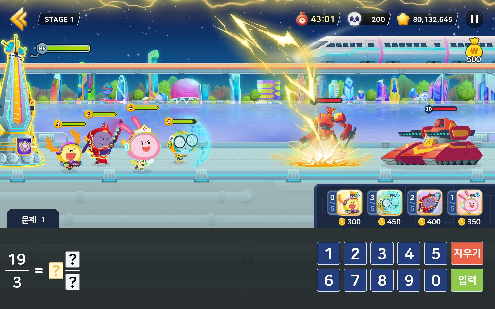
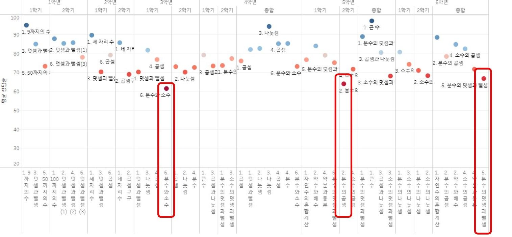
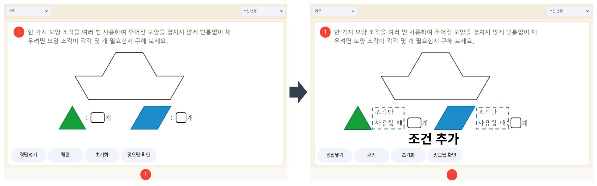
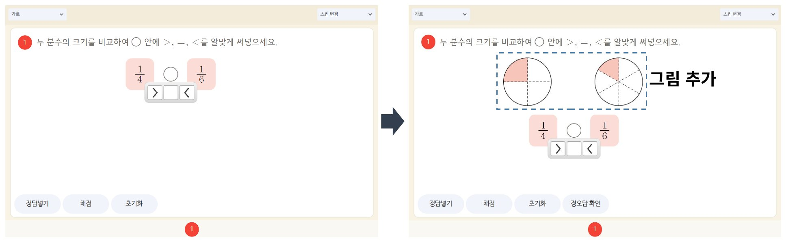
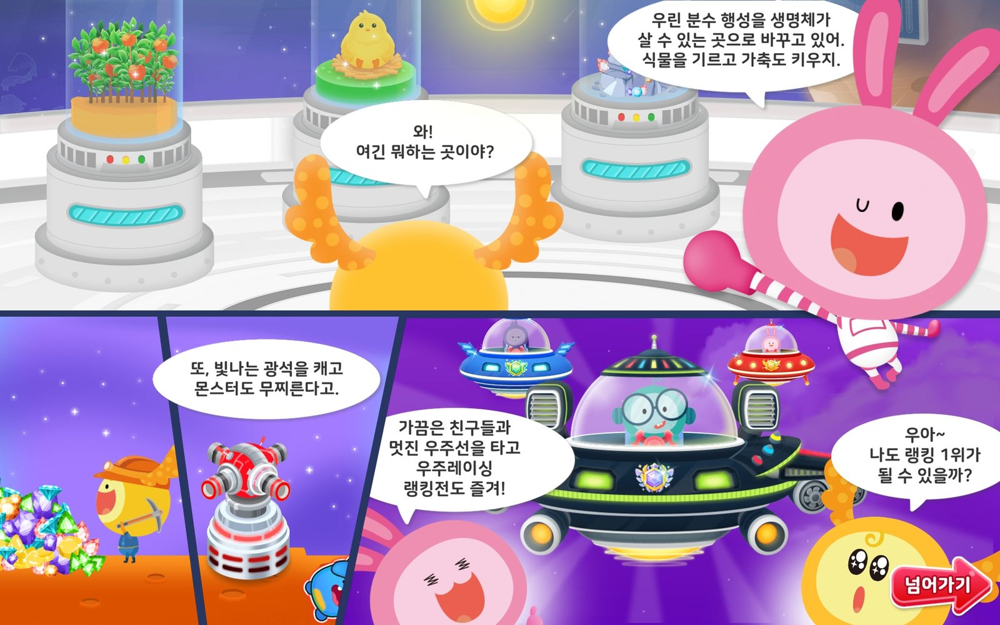
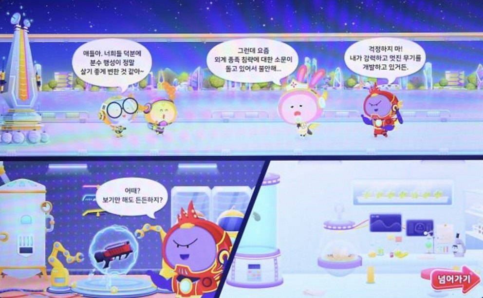
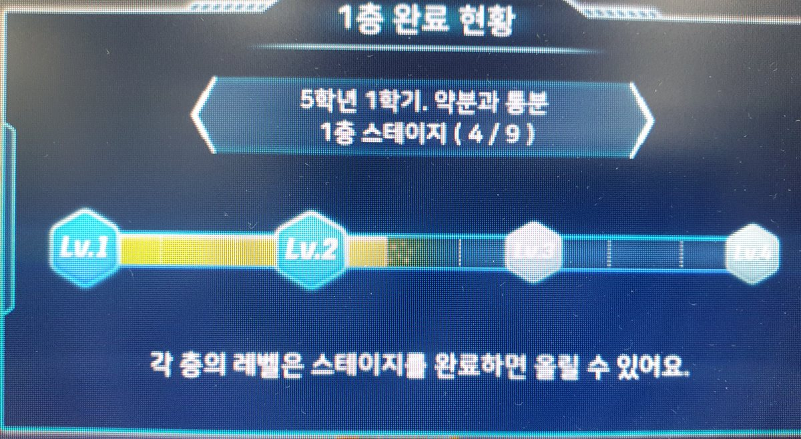
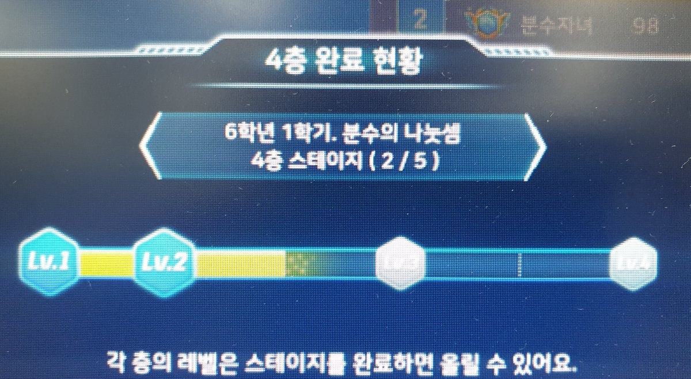
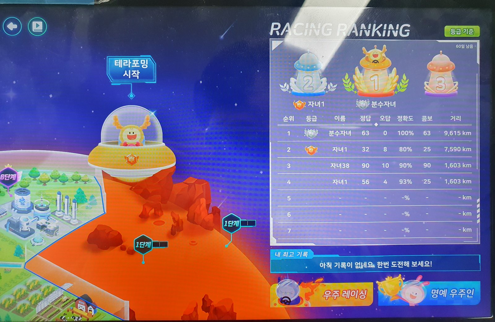

분수 행성 테라포밍 · 디펜스
웅진씽크빅의 초등 학습 서비스 스마트올에서 만든 수학 학습 게임 두 편입니다. 평가 데이터를 분석해 보니 학생들이 가장 어려워한 단원이 분수였고, 그래서 분수 문제를 게임 안에서 반복해 풀도록 만들었습니다.

- 구분
- 회사 · 웅진씽크빅 스마트올 · 초등 3~6학년
- 역할
- 3~4학년 주 담당(선배 한 명 보조), 5~6학년 단독. 스토리·게임 구성·랭킹 세부 기획, 캐릭터·적·타워 수치 설계와 테스트, 문항 1,800개(3~4학년)·1,900개(5~6학년) 전부 제작. 개발은 외주 개발사
- 기간
- 2022.08~2023.10
- 도구
- Tableau · Excel · 엔트리
- 결과
- 복습률 95%(3~4학년)·90%(5~6학년), 진입률 스마트올 12과목 중 2위(3~4학년)·3위(5~6학년), 2024년 1월 집계 · 3~4학년 학습 완료율 81.2%(오픈 약 두 달 뒤)
- 복습률: 게임 학습을 마친 학생 중 두 번 이상 마친 학생의 비율
- 진입률: 스마트올 과목 화면에 들어온 학생 중 이 게임을 고른 학생의 비율
평가 데이터에서 시작했습니다
스마트올의 전 과목 평가 데이터를 분석해 회의에서 보고하고, 과목별 담당자에게 결과를 설명했습니다. 초등 「수와 연산」에서 정답률이 가장 낮게 나온 단원은 3학년 「분수와 소수」와 5학년 「분수의 곱셈」이었습니다. 이 결과를 가지고 두 가지 일을 했습니다.
- 문항 고치기. 난이도에 비해 정답률이 지나치게 높거나 낮은 문항을 골라 고치고, 다음 회차에 정답률이 달라졌는지 다시 확인했습니다.
- 4-2 다각형 25번: 조건을 더하자 31.8% → 54.6%
- 4학년 분수와 소수 6번: 그림을 더하자 51.2% → 76.7%
- 분수 게임 만들기. 정답률이 가장 낮은 두 단원이 모두 분수 단원이어서, 분수 단원을 반복해서 풀 수 있는 게임을 기획했습니다.



게임은 하나의 이야기로 이어집니다
3~4학년은 생명체가 살 수 있도록 분수 행성을 테라포밍하는 이야기이고, 동식물을 키우고 광물을 캐고 기지를 지키는 것이 임무입니다. 5~6학년은 그 뒤의 이야기로, 살기 좋아진 분수 행성에 외계 종족이 쳐들어오자 이를 막아 내는 디펜스 게임입니다. 게임에 처음 들어가면 이 이야기가 컷툰으로 나오고, 스테이지와 게임도 모두 이 이야기를 따라갑니다.


설계 기준은 영국·미국 공교육에서 쓰는 Times Tables Rock Stars를 벤치마킹해 먼저 정했습니다. 속도감, 경쟁심, 반복 학습, 몰입감, 동기 유발, 일체감 여섯 가지입니다. 게임 아이디어와 이야기의 큰 줄기는 회사 안에서 함께 냈고, 개발사가 이를 구현해 보여 주면 세부는 대부분 제가 정해 다듬었습니다.
학습과 게임은 이렇게 맞물립니다. 교과서 차시에 맞춘 문항 스테이지에서 문제를 맞히면 동식물이 자랍니다. 그룹을 다 풀면 광부 게임이, 단원을 다 풀면 기지 지키기 게임이 열립니다. 메인 랭킹 게임만은 처음부터 열려 있는데, 3~4학년은 우주 레이싱, 5~6학년은 디펜스 게임입니다.
문항 3,700개는 엑셀 함수로 만들었습니다
3~6학년 문항은 모두 제가 만들었습니다. AI가 없던 때라 엑셀에 분수 계산 함수를 만들어, 식만 넣으면 중간 과정과 답이 자동으로 나오게 했습니다. 받아올림·받아내림이 있는 식, 가분수나 대분수로 바꾸는 식처럼 학년과 단원, 주요 개념마다 함수를 따로 만들어 문항을 한꺼번에 뽑았습니다.
수치와 오류는 직접 해 보며 확인했습니다
게임 수치는 엑셀로 계산했지만, 그 수치가 화면에서 어떻게 느껴질지는 계산만으로 알 수 없었습니다. 그래서 엔트리로 타워 공격 속도를 바꿔 볼 수 있는 시험판을 만들어, 직접 보며 정했습니다.
개발된 게임도 직접 하면서 오류를 찾았습니다. 레벨을 올려도 광부 캐릭터가 빨라지지 않아 시간을 재 보았고, 개발사가 확인해 보니 속도가 0으로 초기화되는 오류였습니다. 우주 레이싱의 컴퓨터 우주선이 설정보다 빠른 것은, 100초 동안 푼 문제 수를 비교해 보여 주고 고치게 했습니다. 5~6학년 디펜스에서는 공격하지 않는 탱커만 두면 끝없이 버틸 수 있는 허점을 찾아, 힐러 능력치를 낮춰 막았습니다.
서비스를 연 뒤에는 맞힌 문제 수에 비해 점수가 지나치게 높은 랭킹 기록을 추적했습니다. 개발사가 원인을 찾아보니 부스터가 끊기지 않고 이어지는 허점이었고, 이를 고치면서 시즌 기록을 초기화했습니다. 이때 학생들에게 띄울 공지 문구는 제가 썼습니다.
3~4학년에서 놓친 것
앞에서 말한 대로 메인 랭킹 게임은 학습과 상관없이 처음부터 열려 있었습니다. 그러다 보니 학생들은 랭킹 게임만 하고, 학습은 가장 쉬운 단원인 3-1에 몰렸습니다. 자기 학년 단원에 들어온 비율은 단원마다 20%대에 머물렀고, 가장 쉬운 단원 하나가 전체 진입의 절반을 차지했습니다. 랭킹 게임과 학습을 이어 두지 않아서 생긴 일로, 처음 기획할 때 미처 생각하지 못한 부분입니다.
5~6학년: 공부해야 랭킹이 오르게 했습니다
그래서 5~6학년에서는 랭킹 점수가 학습과 이어지게 만들었습니다. 홈 화면에 5층짜리 기지를 두고, 층마다 분수 단원을 하나씩 정했습니다. 그 단원의 스테이지를 클리어하면 층의 레벨이 오르고, 그 층 캐릭터도 강해집니다. 이 캐릭터들이 디펜스 게임에서 싸우는 아군이라, 높은 점수를 내려면 단원을 공부해야 합니다.


3~4학년도 다시 고쳤습니다
5~6학년을 만들면서, 서비스 중이던 3~4학년도 행성을 단원별 구역으로 나눴습니다. 해당 구역의 단원 학습을 완료하면 테라포밍이 완료되고 홈 화면의 구역 이미지가 바뀝니다. 하지만 이미 서비스 중인 콘텐츠라서 랭킹 점수 기록에 직접적인 영향까지 줄 수는 없게 했습니다.
